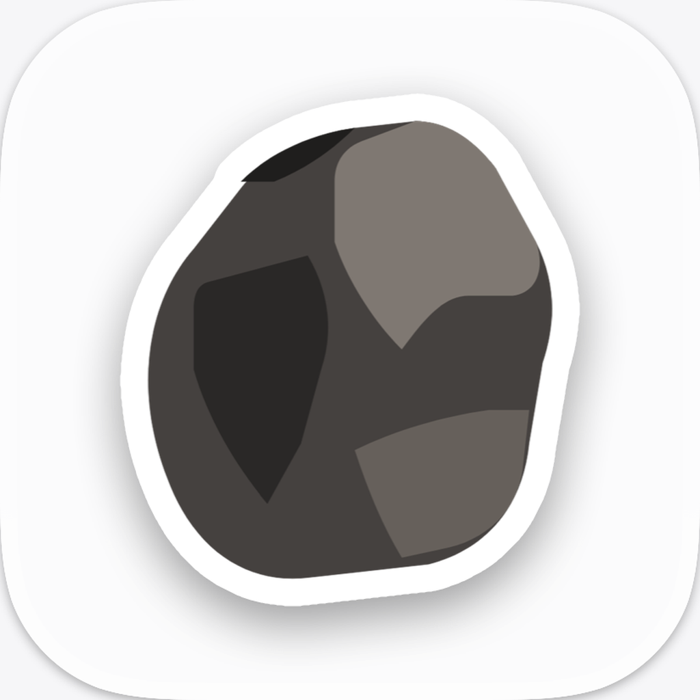
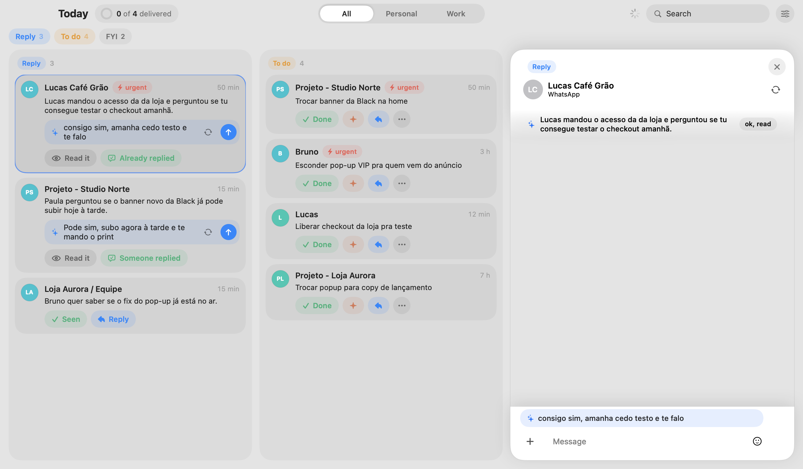
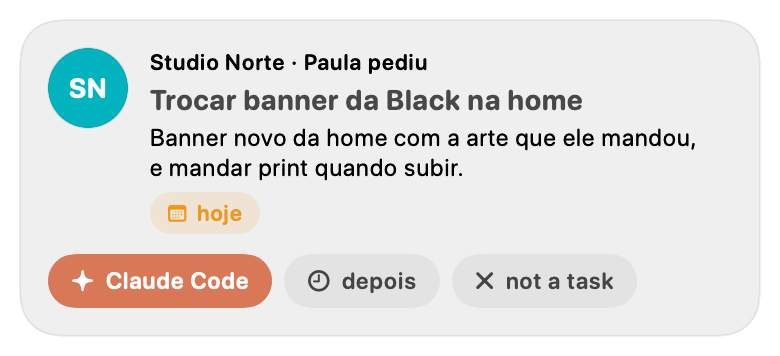

Your work WhatsApp,
in order.
Sísifo reads your groups, pulls out what people ask of you and sums up the rest in one line. You only push the right rock.
Free and open source. macOS 26, Apple Silicon.

The rock lives in your menu bar. A new task comes in, it wobbles.
Every day the rock rolls back up. Client groups, three minute voice notes, "did you see my message?". Sísifo does not take the rock away. It just shows you which one is next.
Three lanes. Nothing else.
Every new conversation lands in the right place on its own. Empty lanes disappear.
Who is waiting on you.
Questions asked to you, with a summary and a reply already written the way you write.
What turned into work.
Requests become tasks with client, who asked and due date. Done, cross it off.
The rest, in one line.
Team chatter and messages that are not for you. You stay in the loop without opening anything.
Reply without opening WhatsApp.
The suggestion is already written in your voice. Tap the arrow and it is sent.
Work and Personal.
Where your team talks is work. Everything else stays out.
One task, one click, Claude Code.
Send the request to Claude Code with the whole conversation as context.

Real chats, inside the app.
Open the chat, read the summary, reply. All in one window.
One sound. An echo on the hill.
When a task arrives, a short echo from up the hill. Turn it off in the rock menu.
Stays on your Mac.
Your messages live in a folder on your computer. They only go to Claude when it is time to summarize, using your own subscription. No server of ours in between.
127.0.0.1. Nothing open to the outside.Three steps. Done.
Download and drag
Open Sisifo.dmg and drag the app to Applications.
Connect Claude
Sísifo finds Claude Code on its own, however you installed it.
Scan the QR
Link WhatsApp, mark who is on your team and let it read.
Dúvidas.
How much does it cost?
Nothing. The app is free and open source. Whatever Claude you use comes from your own subscription.
Does it run on my Mac?
It needs macOS 26 on an Apple Silicon Mac (M1 or later) and Claude Code installed and signed in. Intel Macs are not supported.
macOS says it could not verify the app.
The app is not notarized by Apple yet. Go to System Settings, Privacy & Security, scroll to the bottom and click Open Anyway. If it says the app is damaged, run this once in Terminal: xattr -dr com.apple.quarantine /Applications/Sisifo.app
Is it safe for my WhatsApp?
The connection works like WhatsApp Web, but it is not official. WhatsApp may limit accounts that use apps like this. Use it in moderation and at your own risk.
Is it available in Portuguese?
Yes. English and Portuguese, pick one on the first screen or later in the rock menu.
How does it update?
On its own. Once a day it checks for a new version, downloads it and swaps the app. Your data stays where it is.
One must imagine Sisyphus happy.Albert Camus